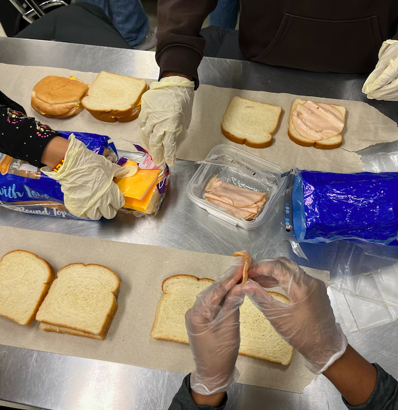

Our Mission:
At The Chef's Heart, we believe that a warm meal is more than nourishment, it can spark hope, build connection, and
leave a lasting impact. Driven by compassion and led by student leadership, we are addressing food insecurity and changing how communities face
food insecurity where it's not seen as a challenge to manage, but as a human story to change.
Through hands-on service,
we create spaces where kindness flourishes, and everyone feels seen, heard, and valued.
With one meal at a time, we’re building a world where kindness leads and community matters.
Meet the Team:

Reema Krishnan
Co-Founder & Co-President
Rosalynn Truong
Co-Founder & Co-President
Ayush Naik
Vice President
Our History:
Chef’s Heart began as a student-led school club in Minneapolis, created by a group of passionate high schoolers who
wanted to make a difference in their community. They began by preparing and delivering sandwiches to local food
shelters, learning that even small efforts could have a big impact. The club quickly became a space for students to step
into leadership, practice compassion, and address food insecurity firsthand.
Chef’s Heart has grown into a larger initiative that continues to be powered by student volunteers. While we still serve
shelters, we’ve expanded our reach through culturally inspired Meal Kits, designed to give families facing food
insecurity the tools to cook affordable, nutritious meals at home. What started as a handful of students serving their
city has evolved into a movement that empowers young leaders to initiate change and nourish their communities.